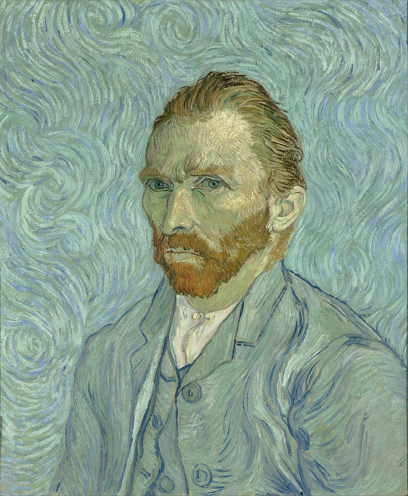
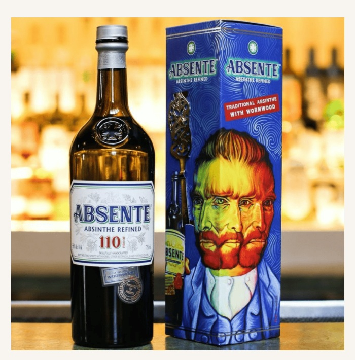
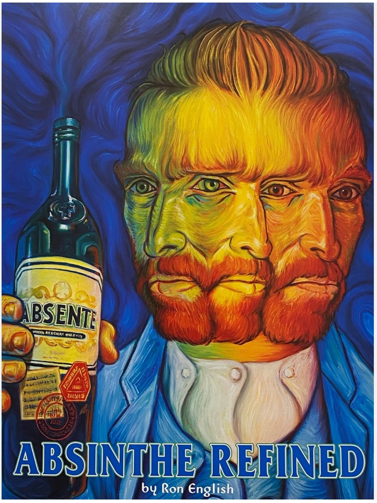

Literature
Ron English, Popaganda: The Art & Subversion of Ron English (San Francisco: Last Gasp, 2001), p. 150. ISBN 1-887128-60-3.
Notes
In Popaganda, this work was erroneously reported as 36 × 36 inches.
This work references Vincent van Gogh’s self-portrait.
This packaging design appears on SevenFifty Daily’s brand page for Absente Absinthe Refined.
A poster reproducing this image appears on an eBay listing titled 2007 ORIGINAL Absinthe Absente Refined Ad Poster Ron English 24" Advertisement.
Ancillary Documentation
The following materials document source imagery, packaging use, and poster reproduction connected to the work.



Selected Online Circulation
Selected examples of the work’s online circulation, reproduction, or discussion. This list is not exhaustive; it is intended to document representative appearances of the image beyond formal publication records.